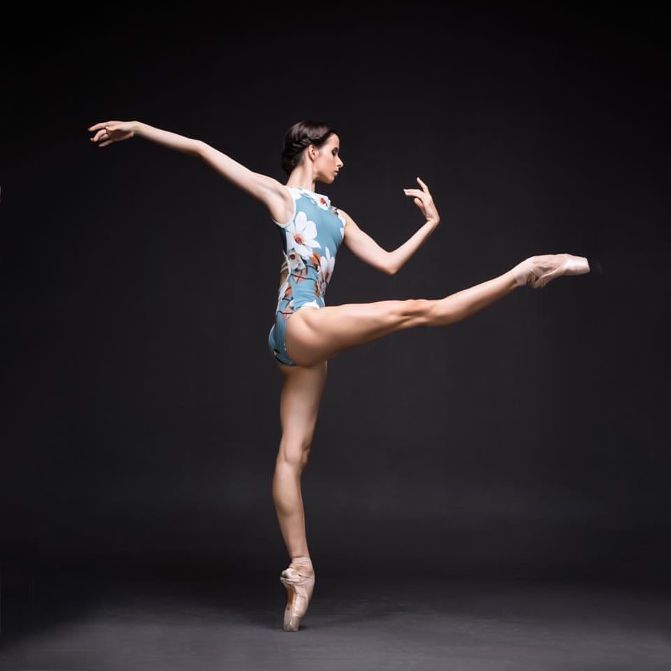
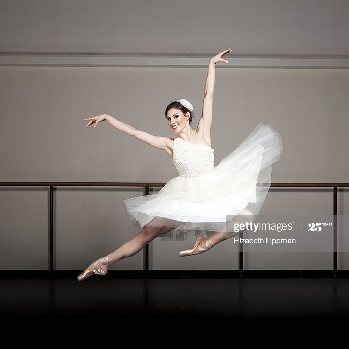
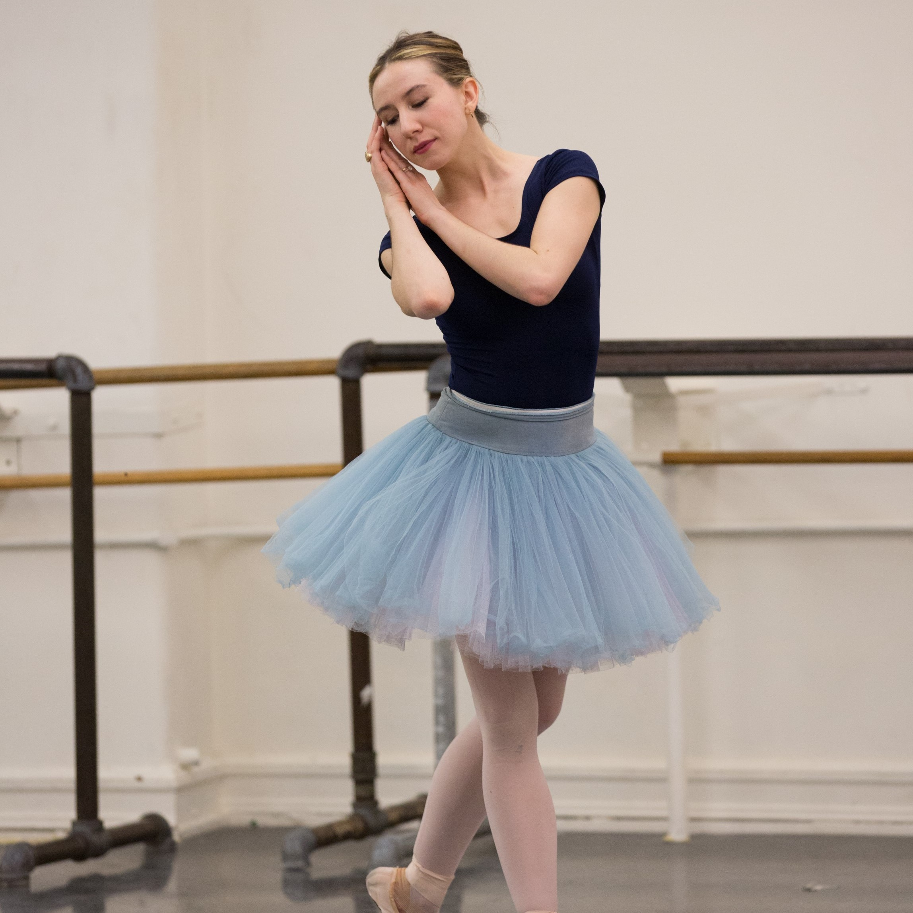
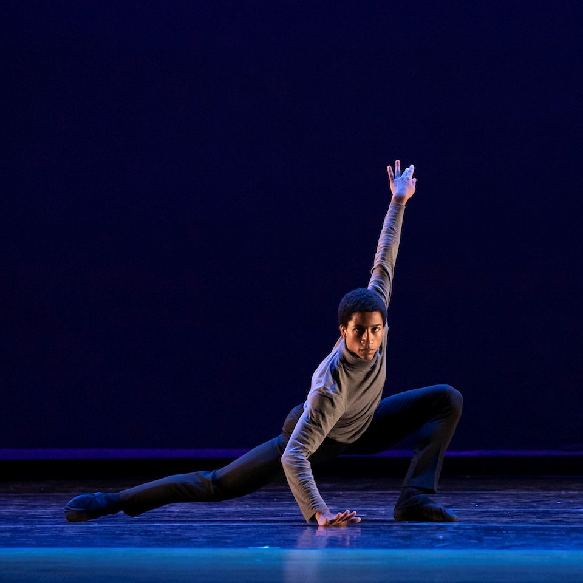
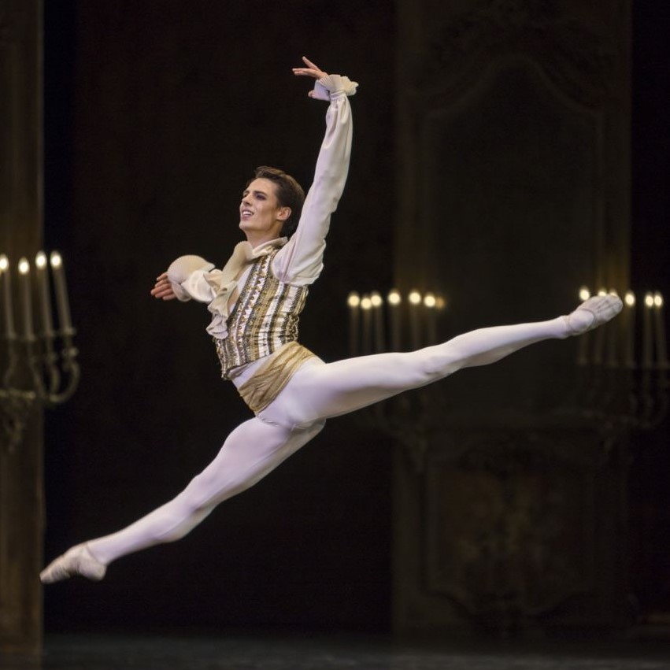
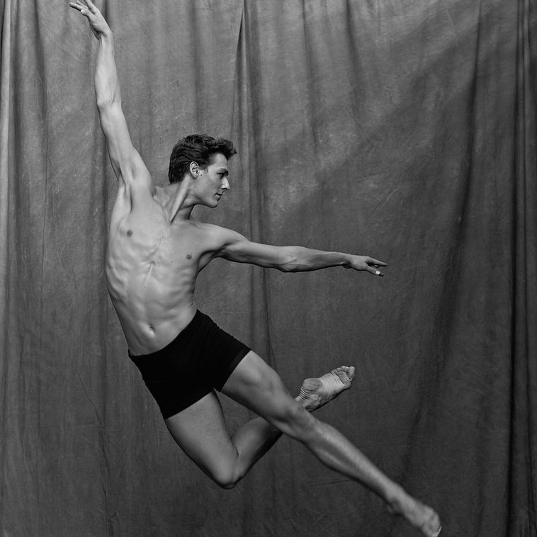
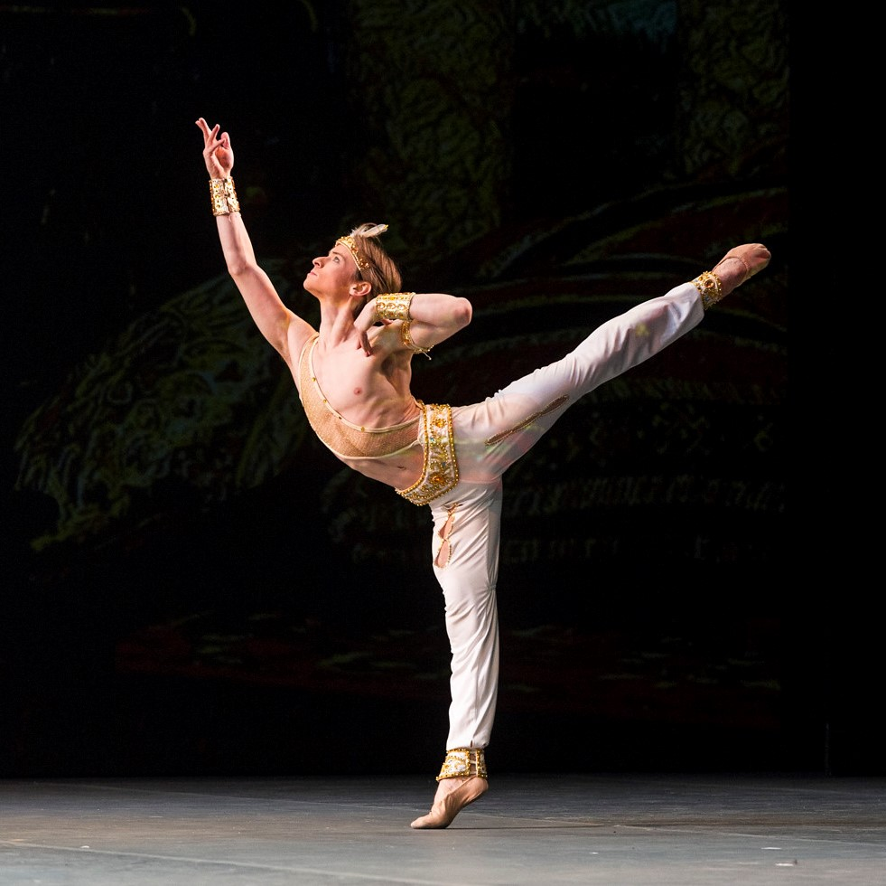
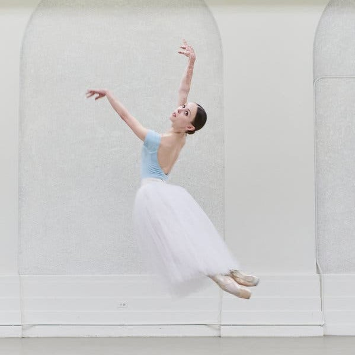
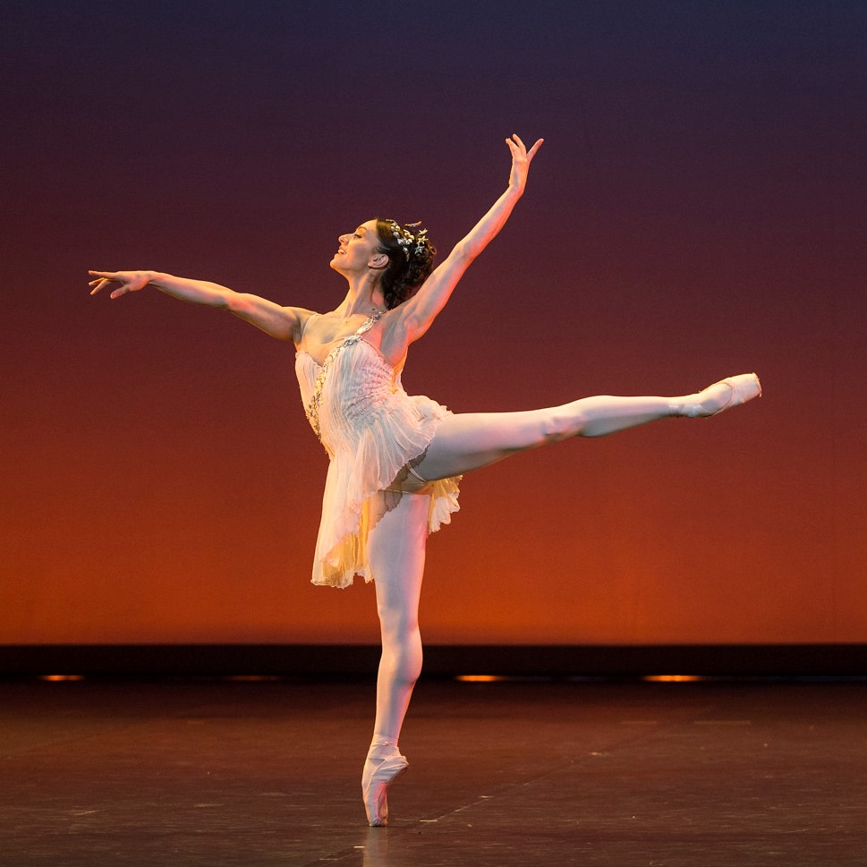

One of my favourite things to do is baking. I started to bake from a very young age with my aunt and my grandmother. They are exceptionally great cooks and I was lucky enough to learnt from them.
Growing up, my grandparents’ house was the place for gathering and sharing where all family dinners were happening. I have always cherished this place as it holds so many precious memories. I can especially remember all the fragrances emanating from the kitchen. From traditional Chinese recipes to French patisserie by way of Tahitian feasts, we were always served the best food. As a little girl, I was often wondering around the kitchen, peeking into the oven to see what my grandma was cooking. Although I was too young to actually cook with her, I liked to give her a hand by handing her ingredients or wiping the table. She would always reward me by letting me lick the bottom of the pot. She taught me plenty of family recipes that remind me of home each time I make them.
On the other hand, pastry is my aunt’s specialty. She makes the most delightful sponge cakes and the most incredible choux pastry you can ever dream of. She used to run her own cake shop too. I learnt a lot, just by watching her baking and enjoying this passion of hers. She taught me how to pipe flawless macarons shells, how to line the tart tin, how to temper chocolate and so much more. I liked spending time with her, and I believe that is how I started developing my love for baking.
Since we have been in lockdown recently, I have been baking quite a lot. It was the perfect activity to do during those time, staying at home. Baking has revealed itself to be a very smoothing activity. When I cook or bake, I can allow myself to forget about the outside world for a moment and focus on something that, in my opinion, will always bring joy: food. Besides, since I have been living here, I discovered that cooking recipes from home can also be a good treatment for homesickness.
For me, baking is all about sharing. Thus, I think this activity is a great way to socialise and meet new friends. It gives the opportunity to connect with people and to exchange knowledge and emotions. Food can bring people together. That is why I always believe in the power of a good plate of food. I like to share this passion of mine with others. With some of my friends, we often organise cooking parties where everybody exchanges recipes and techniques. That is very enriching and it is also a good bonding activity.
Another aspect that I like about cooking and baking is that anyone can do it. In my opinion, the key element to a successful cooking is the recipe. As long as it is followed, nothing can go wrong. Along the years, I have collected a bunch of good recipes from my granmother as well as from cooking magazines. However, in case I lack inspiration, I often refer to these websites to give my new ideas:
Dancing is a huge passion of mine. I have started dance classes at the age of 6, however, I can probably say that I have been dancing all my life. I took my first ballet class at Tschan dance school, in Papeete. Since I arrived in Sydney, I am now taking classes at Studio Tibor and Sydney Ballet Studios.

There are many different types of dancing. Ballet, contemporary, hip hop, tap, belly dance, jazz... I am practising several styles of dance but what I enjoy the most is ballet. I have always been amazed by the sense of elegance and poise that ballerinas convey. In my opinion, ballet is beautiful to watch and it has to ability to awe people, regardless of their age.
Ballet is often perceived as a strict and codified discipline. Indeed, ballet technique is very difficult to achieve. It usually requires years of practise to be able to master ballet technique. It consists of multiple combinations of foot and arms placements that are often associated with head orientations as well. Ballet is a form of art that was emerged in Europe during the 15th and 16th centuries. As a result, most ballet terms have French or Italian consonance. Ballet terminology includes steps such as tendu, plie, pique, gargouillade, arabesque, degage and so on.
Ballet is an interesting discipline as it can qualified both as art and sport. Indeed, ballet and dancing in general is an expression of creativity. But it is also really physically demanding. As a result, professional ballet dancers usually are to retire around the age of 40 since their body cannot handle the amount and intensity of activity anymore. Most of them then become maitres de ballet or teachers.
Ballet is quite common in many countries. There are professional ballet companies all around the world. Among them, the most renown ones are the Bolchoi Ballet, the Paris Opera Ballet, the Australian Ballet, the American Ballet Theatre and the Royal Ballet.
For me, ballet is a fun and enjoyable way to exercise and stay fit. Many would agree that physical activity is easier with music. Thus, ballet allows me to exercise in a different way that often make me forget that I am even exercising. Moreover, I like to dance because it allows me to go beyond my limits and it tests my stamina. Ballet is often more challenging than most people think. It demands lots of dedication and hard work therefore, it helps me to develop a resilient mindset that serves me in other domains as well. Besides, when I dance, I can escape the moroseness of the routine just for a moment. It brings me joy when I have got the blues; it lifts me up when I feel down. Dancing allows me to express myself without words. Through movement, I can tell stories and show emotions.
Click on a photo to learn more about each dancer
|  |  |  |
Maria Khoreva |
Tiler Peck |
Isabella Boylston |
|  |  |  |
Melvin Lawovi |
Germain Louvet |
Hugo Marchand |
|  |  |  |
Daniil Simkin |
Skylar Brandt |
Marianela Nunez |